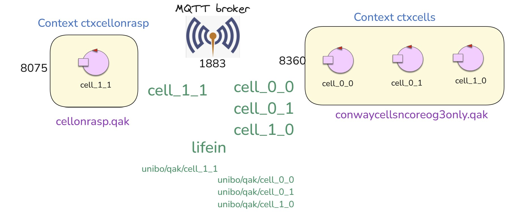
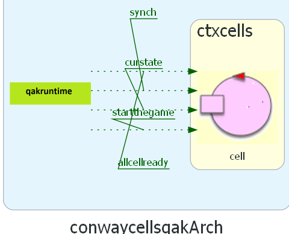
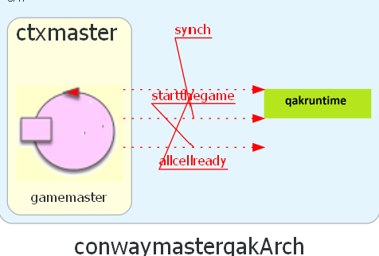

RaspberryCode2025¶
rasp2025¶
rasp2025ledalone¶
Un actor che gestisce i Dispatch
|
Installazioni 2025¶
Installazione Java 17 con OS=bookworm
sudo apt update sudo apt full-upgrade sudo apt install temurin-17-jre //no jadk
Controllo apertura porta
1883su Windows
{kind=link}
Guardare in properites
netstat -ano | findstr :1883
sudo nano /etc/dhcpcd.conf static domain_name_servers=8.8.8.8 8.8.4.4 sudo systemctl restart dhcpcd
gradlew disZip unzip su Raspberry copia di python in bin esecuzione in bin di ./rasp2025
sudo nano rasp2025.pl //modifico il sistema su Raspberry
cellOnRasp¶
Attore che realizza la cella di nome L’actor |
|
Sottosistema che crea dinamicamente su PC le celle |
|
Object Kotlin che definisce funzioni di utilità, tra cui
|
|
Programma Java che invia comandi GUI-like via MQTT sulla topic |
cellOnRasp system Architecture¶
{kind=link}
cellOnRasp Punti salienti¶
In entrambi i sotto-sistemi conwaycellsncoreog3only.qak e cellonrasp.qak:
mqttBroker “192.168.x.y” : 1883 eventTopic “lifein” |
Dichiarazione che induce la Qak infrastructure a creare una connessione MQTT con il broker. Inoltre, ogni attore:
|
kernel_rawmsg : kernel_rawmsg(ARG) |
L’evento kernel_rawmsg viene emesso dalla Qak infrastructure quando il metodo di callback MQTT messageArrived riceve una stringa che non corrisponde a un oggetto di tipo IApplMessage. Il componente che percepisce questo evento può convertire la
stringa
|
event alarm : alarm(X) |
Evento di test per verificare la propagazione degli eventi via MQTT. |
In conwaycellsncoreog3only.qak:
Context ctxcellonrasp ip [host=”…” port=8075] |
Dichiarazione necessaria solo se si voglioni propagare eventi su un attore del sistema che non usa MQTT. |
ExternalQActor cell_1_1 context ctxcellonrasp |
Dichiarazione necessaria solo se si vuole inviare informazione in modo esplicito alla cella
di nome |
cellsdistributed¶
La sperimentazione del sistema costruito usando N computer fisici, su ciacuno dei quali attivare una cella
è previsto avvenga in Lab2, grazie alla presenza di N studenti, ciascuno con il suo PC su cui
attivare una cella, in uno di due modi:
eseguendo il programma in locale
attivando un container con l’immagine Docker della cella
Progetto conwaycellsqak¶
Nel , una cella viene descritta in Linguaggio qak nel modello conwaycellsqak.qak:
/*
* ==========================================================================
* Codice di una cella
*
* WARNING: mqttBroker "...."
*
* - nasce con nome random
* - richiede al gamemaster (discovered) di partecipare
* - riceve il nome di gioco ( cell-x-y ) e lo rende noto al perceiver
* - cambia il suo nome
* - dice al gamemaster di essere pronta (dispatch cellcreateed)
* - attende l'evento allcellready (emesso dal gamemaster)
* - si sottoscrive alle topic che corrispondeono ai nome delle celle vicine
* - attende il dispatch changeCellState (fase di inizializzazione)
* o l'evento startthegame (emesso da un controller NON dal gamemaster)
* - quando riceve startthegame entra negli STATI DEL GIOCO (Epoch)
* - attende l'evento synch (emsso dal gamemaster che orchestra)
* - gestisce in modo opportuno gli eventi clearcell, stopthecell
*
* Notiamo che
* - la eventTopic 'lifein' è comune a tutte le celle
* - ogni cella fa in modo automatico una subscribe su 'lifein'
* ==========================================================================
*/
|  |
|
{kind=link}
Non disponendo (come accade normalmente) di N nodi computazionali (ed N operatori umani)
le celle sono attivabili in altri modi:
eseguendo su un singolo PC un file bat come activatecells_9.bat
eseguendo su un singolo PC un file yml come `docker-compose-cells9.yml
Progetto conwaymasterqak¶
Nel , il coordinatore del gioco viene descritto in Linguaggio qak nel modello conwaymaster.qak:
/*
* ==========================================================================
* gamemaster
*
* WARNING: mqttBroker "...."
*
* ORCHESTRATORE (non controllore del gioco)
*
* - si registra il EUREKA con nome ctxmaster
* usando al classe di configurazione EurekaServiceConfig
* - legge il numero (NR,NC) delle celle dal file gridconfig.json
* - attende NALLCells=NR*NC richieste addtogame e quando sono arrivate
* - attende NALLCells dispatch cellcreated e quando sono arrivati
* - entra nella FASE DI ORCHESTRAZIONE
* - emit allcellready
* - attende NALLCells dispatch cellready (fine EPOCH di cella)
* - quando arrivati emit synch (segnale di orchestrazione)
*
* Notiamo che
* - gli eventi vengono pubblicati sulla topic 'lifein'
* - il gamemaster NON PERCEPISCE messaggi di controllo
* ==========================================================================
*/
|  |
|
{kind=link}
Esecuzione di cellsdistributed su PC¶
Qui si riporta un esempio di sistema a 9 celle che si potrebbe sperimentare in Lab2.
Attivare mosquitto sul proprio PC
Attivare Eureka sul proprio PC (si veda Atiivare Eureka)
Attivare conwayguialone sul proprio PC (anche in modo MIRROR ONLY)
Controllare gridConfig.json nel progetto conwaymasterqak
Attivare conwaymasterqak
Notare il codice in: mqttConnconwaycellsqak/src/main/java/OutInCellGui.java
Fare la distribuzione (gradlew distZip) del progetto conwaycellsqak e fare unzip nella del progetto
Attivare activatecells_9nodock.bat per creare
9celleAttivare CallerMqtt.java nel progetto conwaycellsqak
In una fase di sperimentazione inizale si potrebbe impostare un sistema a 3 celle (cell-0-0, cell-0-1, cell-0-2), impostando il file gridConfig.json nel progetto conwaymasterqak come segue:
{"rowsNum":1, "colsNum":3, "cellsize":45}
Progetto conwaycellaloneqak¶
Il modello conwaycellalone.qak del progetto conwaycellaloneqak realizza un cella su RaspberryPi
Attenziona ai files che seguono:
attivazione dei microservizi di supporto alle applicazioni iss25: iss2025.yml
main.java.EurekaServiceConfig.javan: necessario per la registrazione dei servizi
main.resources.eureka-client.propertiesn: necessario per il discovery dei servizi (contesti) da parte del codice della Qak infrastructure